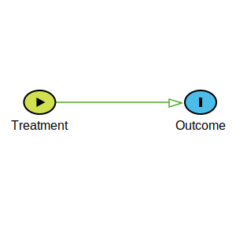
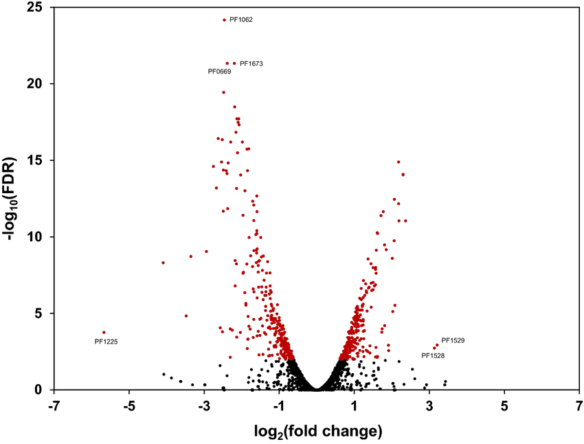

Statistical Reasoning
Introduction
Gavin Kelly - Principal Statistican
biostatistics@crick.ac.uk
Bioinformatics and Biostatistics STP (BABS)
#stp-bioinformatics
General Approach
- No cookbook of "this circumstance ⇒ that test"
- - instead: modelling sources of variation
- Very little maths
- Develop understanding
- Recognise some common traps and fallacies
- Be able to consult with an expert
- Groundwork for future hands-on workshops
Why
A mistake in the operating room can threaten the life of one patient.
A mistake in statistical analysis or interpretation can lead to hundreds of early deaths.
So it is perhaps odd that, while we allow a doctor to conduct surgery only after years of training, we give SPSS PRISM to almost everyone
Varied Audience
- Bench-science - just show me how to do t-test, Chi-square
- Omics recipient - how do I get a handle on this vast data
- Translational/Clinical scientist - Randomised Control Trials, Observational Studies
- Computational Scientist - I know all this already
Course Overview
DESIGN: You need to understand your experiment - treatments, outcomes, and sources and structure of variation
INFERENCE: What approaches are capable of producing the evidence to address your question, from your data
(Not) Mathematical Tools and Machine Learning?
Emphasises that data is an incomplete sample of measurements
of systematically and randomly varying subjects
that come within a scientific context
And we want to want to keep a handle on this in our results.
Not Just Data Analysis
Problem Elicitation and Goal Formulation
Experimental Design
Data Analysis
Presentation and Communication
The Three Statistical Products
- Description
- Capture the structure of the data by compact visual or numerical summary.
- Prediction
- Predict new or future observations via a model of existing data. Estimate associations.
- Explanation
- Testing and quantifying causal relationships.
Description vs Association

A Modelling approach
- Allow for multiple sources of variation:
- Treatment
- Confounders that might mask the treatment effect: grade...
- Modifiers that might stratify the treatment effect: sex, genotype...
- Other independent nuisances: batch, pedigree, patient, sex, cage...
- to affect the outcome.
- Estimate the extent of all sources together
- and calculate uncertainty, and strength of evidence
FAKE DATA
The simplest case
We have 6 measurements: 12, 15, 20, 50, 65, 90
We have 6 labels: C1, C2, C3, T1, T2, T3
Two treatments: Treated (T) and Control (C)
The truth, the whole truth, and nothing but the truth?
Data Frames
| Name | Treatment | Value |
|---|---|---|
| C1 | Control | 12 |
| C2 | Control | 15 |
| C3 | Control | 20 |
| T1 | Treated | 50 |
| T2 | Treated | 65 |
| T3 | Treated | 90 |
Taking it at face value
| Name | Treatment | Value |
|---|---|---|
| C1 | Control | 12 |
| C2 | Control | 15 |
| C3 | Control | 20 |
| T1 | Treated | 50 |
| T2 | Treated | 65 |
| T3 | Treated | 90 |

Does the name hide information?
| Name | Treatment | Label | Value |
|---|---|---|---|
| C1 | Control | 1 | 12 |
| C2 | Control | 2 | 15 |
| C3 | Control | 3 | 20 |
| T1 | Treated | 1 | 50 |
| T2 | Treated | 2 | 65 |
| T3 | Treated | 3 | 90 |


Is it just a label?
| Name | Treatment | Time | Value |
|---|---|---|---|
| C1 | Control | 1 | 12 |
| C2 | Control | 2 | 15 |
| C3 | Control | 3 | 20 |
| T1 | Treated | 1 | 50 |
| T2 | Treated | 2 | 65 |
| T3 | Treated | 3 | 90 |

Really a number?
| Name | Treatment | Condition | Value |
|---|---|---|---|
| C1 | Control | 1 | 12 |
| C2 | Control | 2 | 15 |
| C3 | Control | 3 | 20 |
| T1 | Treated | 1 | 50 |
| T2 | Treated | 2 | 65 |
| T3 | Treated | 3 | 90 |

Is there a 'Difference' !?!
Nothing going on: Y ~ Constant
Individuals different: Y ~ Individual
Treatment has an effect: Y~Treatment
Time has an effect: Y~Time
Both effects: Y~Treatment + Time
Modification: Y~Treatment + Time + Treatment:Time
Greater within-unit variability
Greater overall variability
Recap
- 'Simple questions' can escalate
- Modelling is a unifying strategy
- - Think "sources of variation"
- - Unthinking pre-processing is dangerous
- A data-frame is just the beginning to understanding your experiment
- It's never too early to think about how to analyse
- Clarity of research question is fundamental
TERMINOLOGY
Experiment
A study in which the investigator has the scope to apply any of the Treatments to any Unit, to observe some Response.
Experimental Unit
The independent subdivisions of your subjects that might receive any treatment. Typically we refer to an experiment having a total number of experimental units as 'N'.
Experimental Unit
Might not be the biological unit:
- Mouse vs Cage
- Biopsy vs Patient
- Cell line vs plate
- Mouse vs Mouse at 24hrs
| Cage | Treatment |
|---|---|
| C1 | Low |
| C1 | Low |
| C2 | Normal |
| Patient | Treatment |
|---|---|
| P1 | Drug A |
| P1 | Drug B |
| P2 | Drug B |
| P2 | Drug A |
| Mouse | Time | Treatment |
|---|---|---|
| M1 | 0 | Control |
| M1 | 24hr | Control |
| M2 | 0 | Control |
| M2 | 24hr | Low |
Experimental Unit
Might not be the unit of evaluation:
- Mouse vs Cage
- Cell vs Plate
- Gene vs Cell
Reminder: Experimental units can be allocated treatment independently of each other
class="fragment"> If you've got an N of thousands, it's probably the wrong N. "What's the population?"
Nested Units
Mice are given the treatment, but tumours are measured
In this case, we probably care about how a typical tumour within a typical mouse would respond differently depending on if it was given the treatment or not
The baseline mouse variability is a nuisance. The variability in response to treatment is the real interest. What is the role of tumour variability?
Considerations/approaches
- Ignore: strong risk of over-inflating evidence
- Aggregate: feels wasteful
- 'Account for' mouse: wrong error bars?
- Model (hierarchical): Complex, often restricted
- (Re)Design - don't just assume 'more of everything' is best
Treatment
A study in which the investigator has the scope to apply any of the Treatments to any Unit, to observe some Response.
(Unit = The independent subdivisions of your subjects that might receive any treatment)
An unambiguously defined qualitative or quantitative intervention
Equivalent observational concept: "Exposure"
Single treatment vs Control
- You're not randomly sampling from two pre-treated populations!
- Randomly allocate units to the treatment arms instead
- Q: How many to allocate? A: Enough power!
| Treatment | Response |
|---|---|
| Ctrl | ? |
| Treat | ? |
| Treat | ? |
| Ctrl | ? |
Multiple sub-treatments
- Drug A, Drug B, ... Drug M
- Placebo vs Drug A, Drug B, ...
- Untreated, 2hrs, 4hrs, 12hrs, 24hrs
- 0mg, 5mg, 10mg, 12.5mg
| Treatment | Response |
|---|---|
| Placebo | ? |
| Placebo | ? |
| Drug A | ? |
| Drug B | ? |
Multiple co-treatments
- Untreated, Drug A, Drug B, Drug A+B
- Drug A or Ctrl, Induced/Uninduced Cre
- WT, two solo knockouts, double knockouts.
- Synergistic, antagonistic effects. Non-additive interactions.
- Not only are interactions typically smaller than main effects, they're indirect!
- Flips in direction can mitigate this.
| Treatment | Condition | Response |
|---|---|---|
| Placebo | WT | ? |
| Placebo | KO | ? |
| Drug A | WT | ? |
| Drug A | KO | ? |
So many questions
- Effect of Treatment, ignoring Condition
- or vice-versa
- Effect of Treatment adjusting for Condition
- or vice-versa
- Effect of Treatment in each Condition ⚠
- or vice-versa
- Synergistic/Antagonistic effect of Condition on Treatment
- (equivalent to the flipped question)
Outcome
The post-treatment measurement. Has many aliases:
- Response variable
- Dependent variable
- Variate
- Y
Is the main input to estimating/testing your effect size
You may be recording many variates (multi-variate)
You may be recording them on many evaluation units
Draw your Assumptions before your Conclusions†
Covariates
Sources of variation (of outcome, between units) other than the treatment
- Batch
- Operator
- Sex
- Genetic Background
- Time / Age/ Weight
- Comorbidities
If you haven't randomly allocated them, they're observational
Common Misconceptions
- The data need to be cleansed of these prior to the analysis
- You must have a limited number of them
- You can only have quantitative covariates
- and they must be linear
- You can only have qualitative covariates
- They're the same thing as confounders
- They're the same things as treatment
Dealing with Covariates
- Controlling - look at only one 'branch'
- Stratified Blocking - modifying the randomisation to balance their effect out
- Deliberate confounding
- Accounting for - holistically estimating them with the treatment effect. Reduces 'noise'
- Ignoring
fit ← lm(outcome ~ treatment + covariate) Two-Way ANOVA
Unknown, Unmeasured, or unControlled
We can't record everything
In a randomised experiment, we can expect things to balance out
In an observational study, we need to be so careful
Taxonomy of Causality


Simpson's Paradox - uncontrolled confounding


Collider/Selection Bias
- Two things are both causes of hospitalisation
- Selecting on shared outcome can induce false assocation


Recap
- Have a clear idea of all sources of variation
- Fully describe treatment groups
- Balance is efficient, but not always required ⏲
- Be really clear on your experimental unit (structure)
- Optimise and RANDOMLY ALLOCATE your treatments
- Design for noise-minimisation ⏲
- Understand the nature of your outcome
- Watch out for hidden observational claims
- Know what your question is!
Statistical Reasoning
Introduction
Gavin Kelly - Principal Statistican
biostatistics@crick.ac.uk
Bioinformatics and Biostatistics STP (BABS)
#stp-bioinformatics
Principles of Good Design
- Clear aims
- Unbiased
- Powerful
- Generalisable
- Simple
- Analysable
Samples
- You can't measure the effect of unethical treatments in humans
- Nor the effect in all black 6 mice
- Even just those at the Crick
- So a sufficient subset will have to do
- A truly random one is the best guard against selection bias
Random Sampling


Refresher on data-frames
- Outcome, Treatment and Covariates are all Variables
- Each unit is observed and all the variables are recorded (in a 'data frame')
- Variables come in different 'flavours': Numbers, labels...
| A | B | C | D | E | F | G | H |
|---|---|---|---|---|---|---|---|
| -1.5 | 5.7 | 1 | 87 | [10,200] | 0.5 | Alive | Normal |
| 2.3 | 4.23 | 2 | 43 | [15,20] | 0.8 | Dead | Tumour |
| NA | 99 | 2 | 27 | [18,20] | 0.12 | Dead | Metastasis |
Refresher on approach
- Uncertainty from systematic and random variation
- Explanatory (causal) approach: random allocation
- Predictive (associative) approach: interpreting observational parts requires assumptions
| Reads ~ | Treatment + | Sex + | Batch + | Depth |
|---|---|---|---|---|
| 107 | treated | M | B1 | 1.2e6 |
| 124 | ctrl | F | B2 | 1.2e6 |
| 145 | ctrl | M | B1 | 1.3e6 |
| 12 | treated | F | B2 | 1e5 |
Some 'statistics' terminology
- A Statistic
- A function of data observed in the sample-set outcomes, e.g. total number of reads aligning to EG1 in control samples
- Parameter
- An unknown property of your population or data generating process, e.g. expression level of EG1 in untreated mice
- Estimator
- A statistic that reflects something about the population \(\frac{\text{Reads}_\text{EG1}}{\text{All Reads}}\)
Distributions
Outcome is (partially) random - given everything we know about a mouse/participant/tissue/organoid/plate of cells (Unit), we still can't say with certainty what the outcome measurement will be.
On an apparently identical (exchangeable) unit.
But what is a distribution?
- Rule to get the probability of observing given values
- Area under curve = probability in the range
- Families with 2 primary characteristics: location and spread
Specifically - Poisson for counts?
- 0,1,2... ('no' prior upper bound)
- Number of tumours per mouse; reads aligning to EG1...
- Parametrised by rate (λ, not a whole number)
- Equivalently, everything defined by probability of observing no events
Estimators Revisited
- Estimators typically target (from data) the location (perhaps spread) of some distribution (eg. Poisson), or association between distributions
- Desirable attributes:
- Average across hypothetical repeats converges on true value
- Unlimited replicates would give true value
- Hypothetical repeats don't vary too much
- Robust to outliers
- Maximise how likely your observed data are; minimise error; be parsimonious...
Concrete Examples
- Arithmetic mean ('average')
- Geometric mean (antilog average of log transformed)
- Median (robust, 'middle' value)
- Trimming, winsorizing ≪ robust estimation
- Variance (on a squared scale)
- Standard Deviation (biased)
- Median Absolute Deviation (robust)
- Standard Error (inferential)
Estimating (with Maximum Likelihood)
Sampling Distribution (of the mean)
Half the number of specimens
Repeated sampling approx normal.
More spread out than before, but still narrower than individual measurements
In the context of an estimate (11), spread aka Standard Error (±1.5)
(Why not Poisson for RNASEQ)
- Poisson has fixed spread for given 'average expression'
- Cells are heterogeneous - different cell types=different λ's
- This extra source of variability leads to 'overdispersion'
- 'Negative Binomial' is an (unhelpfully named?) generalisation
- (Same effect, different standard errors - but Poisson can be fixed)
Confidence Intervals
A procedure that works 95% of the time - just as misinterpretable as p-values are
Recap on estimation
- Your data are random (sample)
- You're trying to find out something fixed but unknown (population)
- A summary statistic (estimator) calculated from your data inherits your data's stochasticity.
- Distributions are families of 'random outcomes' that reflect the 'type' of your data
- (Numbers, positives, counts, proportions, coin-flips,...)
- Most of the time, we want to see if two estimates reflect a difference in the population.
P-values
p=0.03, calculated effect is 2. Which is true:
- Probability actual effect>2 or < -2 is 3%
- If there were no effect, 3% of times we'd get a value outside -2…2
- Probability of no change is 3%
- Probability that it's down to chance is 3%
- None of the above

Definition of p-value
Anyone name a city in the UK they've visited?
is a city because it was granted City status by the monarch of the United Kingdom
The probability of observing the sample data, or more extreme data, assuming the null hypothesis is true
Definition vs Interpretation
Reintroduce the t-test
- Unconstrained numeric response, two (randomly allocated) treatment groups
- Are the groups' responses different?
- Instead, estimate two numbers. Equivalents:
- Estimate two group averages (control and treated) and see if their difference is zero, or
- Estimate one group's average \(\mu_\text{Control}\) and one offset \(\delta_\text{TreatmentEffect}\): is that offset zero?
- Are two (three/four/...) numbers better than one (ANOVA/LRT)?
t-test
(Unknown) Control Population
(Unknown) Treated Population
Specimens from Control
Specimens from Treated
Control Mean
Sample Mean
Control relative to Control
Treatment effect (relative to control)
Null sampling distribution (from data, using maths)
Probablity that null data would have exceeded observed
In either direction!
We reject the null hypothesis!
P value interpretation
- A random number depending on your observed data
- 'Low' values: Either my null model (or any of its assumptions) is wrong, or I've been unlucky
- Controls your long-term rate of making false positive claims about an effect
- High p-values could mean your evidence isn't strong
- Confidence intervals are an equivalent way of phrasing uncertainty
- Penalise for one claim based on multiple tests
- Part of the evidence
Not just one estimate
- Response ~ Treatment
- Specifically-distributed random variable's location depends on which treatment group a specimen belongs to
- For Description, just necessary to estimate location in each group (difference ⮕ biological significance)
- For Inference, the location estimates and their difference will 'inherit' a distribution (with a reduced spread c.f. an individual measurement)
- which enables us to test differences statistically.
As complex as you dare
~ 1 (one estimate)

~ 1 + Treatment (two estimates)

~ 1 + Treatment + Time (5 estimates)

~ 1 + Treatment + Time + Treatment:Time

~ 1 + Treatment + numeric(Time)

~ 1 + Treatment * numeric(Time)

~ 1 + Treatment +quadratic(Time)

'P' stands for Princess, not Plot
Enough Null - I have a real effect of 200
mu1 ← 400
mu2 ← 600
sigma ← 120
N ← 4
alpha ← 0.05
N_sim ← 100
for (i in 1:N_sim) {
data ← generate_random_data(N, mu1, mu2, sigma)
fit ← model_fit(data, model = ~time, null = ~1)
pvalues[i] ← fit$p.value
}
table(pvalues < alpha)
Sometimes (seldom) maths can calculate this all in one go. But we always need a minimum effect size of interest (change/std.dev)
(A priori) Power
- A property of your design, indicates likely informativeness
- Assuming an (unobservable) real effect magnitude, how often will our design falsify there being no effect
- Depends on magnitude, noise, statistical stringency,
- and design (= number, allocation and structure of replicates)
- and analysis method
- Just one of several justifications for sample size
Effect of 200 (33% power) ⮕ 300
4 replicates (33% power) ⮕ 7
StdDev 120 (33% power) ⮕ 60
Design for successful inference
- Uncertain data means uncertain conclusions
- Easiest to find large effects, with good tools, when averaging many & consistent replicates
- Power calculation (simulate experiment, or via formula) informative on eventual significance
- Randomisation expected to cancel out unmeasured biases in the long run
- But small N in any individual experiment might not achieve this
- Can't boost N by repeatedly measuring same unit
Missingness
- Completely at random (MCAR)
- Predictable (MAR)
- Structural (MNAR)
- Partial (Censored)
Tens of thousands of ...
- Omics experiments aren't big data, they're wide data
- The experimental design stays much the same for each gene/protein/metabolite
- Most inference is on a one-by-one basis = screening
- Exploration mandates the need to compress across features (PCA, UMAP, cluster, ...)
- But if I'm testing 10,000s, what about false positives
Multiple tests, fewer claims is PROBLEMATIC
Multiple tests and claims could be honestly enriched with false-positives
FDR a property of the whole list of positives, FWER a property of each positive
Recap - modelling
"Be alert to what is importantly wrong" (lack of independence/additivity, missing terms, lost information)
We can capture complex relations between response and observed sources of variation. Data Frame + model formula
Noisy data = quantifiably uncertain conclusions
Have a clear question, and a design that supports your analysis plan
Do ask questions
Statistical Reasoning
Gavin Kelly - Principal Statistican
biostatistics@crick.ac.uk
Bioinformatics and Biostatistics STP (BABS)
#stp-bioinformatics